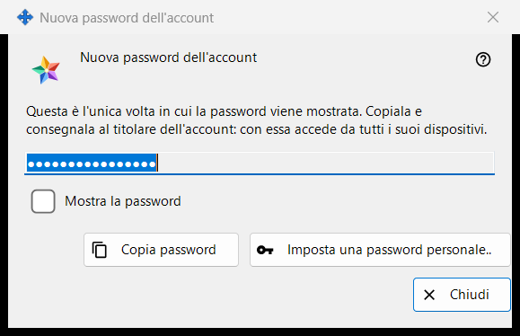
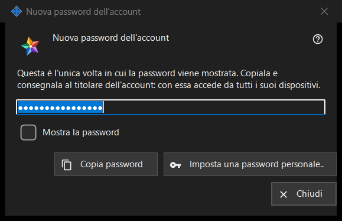

Nuova password dell'account
Scopo
Mostra o chiede la password di un account del server di scambio, in tre modalità: Generata mostra una password appena creata dal programma, una sola volta (l'immagine); Digitata chiede una password a tua scelta; Conservata mostra una password memorizzata su questo PC. Si apre nelle impostazioni del server di scambio locale dello Share Manager dopo «Aggiungi un account..», «Reimposta password..» o «Imposta password condivisa..», e dalle domande sulla password dell'amministratore.


In questo ordine
- Generata: premi «Copia password» (spunta «Mostra la password» per leggerla), consegna la password al titolare dell'account e premi «Chiudi».
- Password personale: premi «Imposta una password personale..» oppure scegli «Digito io una password», digita una password che rispetti la regola e premi «Salva password».
- Conservata: seleziona l'account e premi «Mostra password..».
Gli elementi
Password generata (nell'immagine)
Titolo della finestra «Nuova password dell'account». Il testo introduttivo dice: «Questa è l'unica volta in cui la password viene mostrata. Copiala e consegnala al titolare dell'account: con essa accede da tutti i suoi dispositivi.» Il campo è mascherato e di sola lettura; «Mostra la password» lo rivela solo in questa finestra. «Copia password» la mette negli appunti attraverso un percorso protetto che la tiene fuori dalla cronologia degli appunti di Windows e dagli appunti nel cloud, e risponde «La password è stata copiata.». Alla chiusura della finestra il campo viene svuotato.
Chiudere senza copiare
Se chiudi una password generata senza averla copiata né mostrata, il programma chiede «Chiudere senza copiare la password?» e aggiunge che non può essere mostrata di nuovo - in seguito si potrà solo reimpostare. La risposta predefinita è «No». Quando la password è conservata su questo PC, non viene posta alcuna domanda.
Imposta una password personale..
Si usa dalla finestra dell'account: chiude questa finestra senza usare la password generata e riapre la reimpostazione, questa volta con una password che digiti tu.
Password digitata
Titolo «Password dell'account», etichetta «Password:», un campo mascherato e «Mostra la password». Suggerimento: «Almeno 10 caratteri, con una lettera latina maiuscola, una minuscola e una cifra.» Mentre digiti, una riga di avviso dice che cosa manca, per esempio «Serve almeno una cifra.». «Salva password» rifiuta una password che non rispetta la regola; una che la rispetta torna alla finestra che l'aveva richiesta, e l'ultima parola resta al server.
Password conservata
Il titolo aggiunge il login a «Password dell'account». La finestra mostra la password memorizzata su questo PC, di sola lettura, con «Mostra la password» e «Copia password»; alla chiusura non viene chiesto nulla. Si apre con «Mostra password..» nell'elenco degli account, che compare solo finché l'interruttore «Conserva le password degli account su questo PC» è attivo. L'interruttore è disattivato per impostazione predefinita; attivarlo chiede prima conferma, e la password viene poi conservata cifrata per il tuo account Windows, leggibile da qualsiasi programma in esecuzione con quell'account. Una password impostata prima di attivare l'interruttore non viene conservata.
Impostazioni del gestore · Impostazioni condivisione SFTP · Impostazioni server di scambio